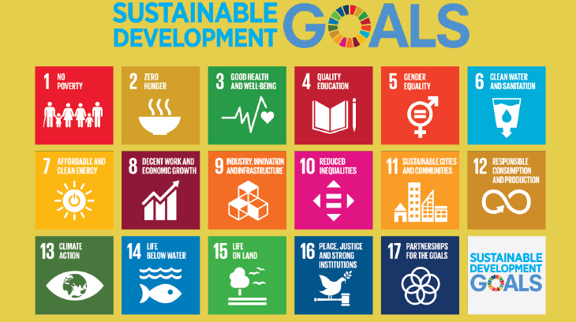
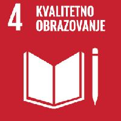

Šta su ciljevi održivog razvoja
CIljevi održivog razvoja predstavljaju hitan poziv na akciju svim zemljama kako bismo zajedno uticali na svetske probleme. Ciljeve održivog razvoja, poznate i pod nazivom "Globalni ciljevi", usvojile su Ujedinjene nacije 2015, kao univerzalni poziv na zajedničku akciju u cilju iskorenjivanja siromaštva, zaštite planete i obezbeđivanja mira i prospreriteta za sve ljude - najkasnije do 2030. 17 ciljeva je međusobno povezano budući da ključ uspeha jednog cilja često leži u sagledavanju izazova koji su svojstveni nekom drugom cilju, a razvoj je neodvojiv od ravnoteže između socijalnog, ekonomskog i aspekta održivosti životne sredine i ne sme biti na štetu ovih aspekata.
Žasto cilj 4?
Obezbediti inkluzivno i kvalitetno obrazovanje i promovisati mogućnosti celoživotnog učenja. Cilj je da do kraja 2030. obezbediti da sve devojčice i dečaci završe besplatno, jednako i kvalitetno osnovno i srednje obrazovanje koje vodi ka relevantnim i delotvornim ishodima učenja. Takođe obezbediti da svi učenici steknu znanja i veštine potrebne da se unapredi održivi razvoj, između ostalog i putem edukacije za održivi razvoj i održive stilove života, ljudska prava, rodnu ravnopravnost, kao i za promovisanje kulture mira i nenasilja, pripadnosti globalnoj zajednici i poštovanja kulturne raznolikosti i doprinosa kulture održivom razvoju. Upravo zato ovaj projekat - kako vi sa decom od malena radili na razbijanju predrasuda prema drugim nacionalnostima, drugim ljudima koji drugačije pričaju i izgledaju, da bi naučili njihov jezik i upoznali se sa njihovom kulturom, a usput i da uvide probleme i kako mogu tako i mali da rade praktično na njima.
